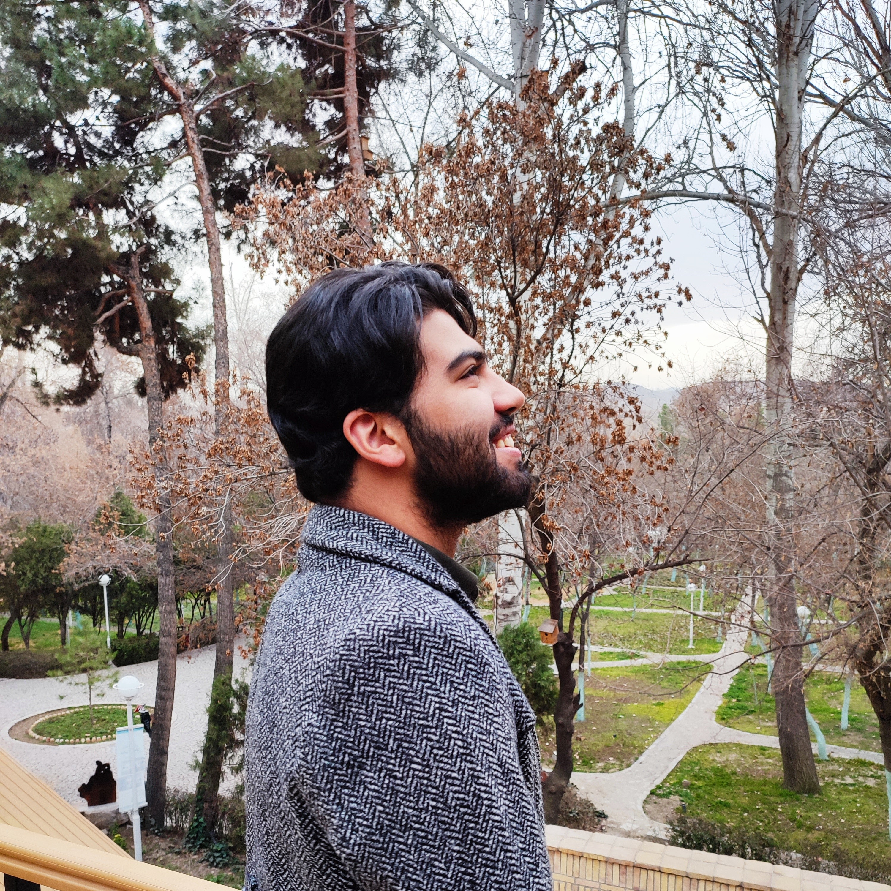

به رزومه من خوش آمدید

پسری متولد 1382 در شهر مشهد، علاقه مند به کامپیوتر و از همون بچگی بخشی از مسیر زندگی اش شروع میشه.
درحال حاضر در زمینه
فرانت اند
در حال فعالیته و خوشحال میشه که در اینجا بتونه خودش رو بهتر به شما معرفی کنه :)
کوروش سلمان زاده
برنامه نویس فرانت اند